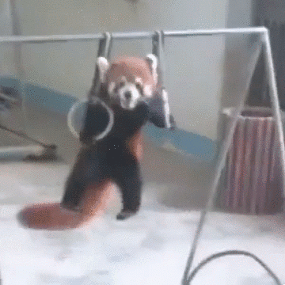

Red Panda
This animal is another adorable one on the list. This cute furry animal have paw that enable them to grab items. Red Panda also are most active during winter. Although they are cute animal, but they are not siutable house pet since they flourish better in the wild. Red panada is a omnivores that will eat anything from bamboo to small prey. These animal can also climb exceptionally well due to their false thumb being able to hold on tree tighly. Red panda mother care for her cub. During the first week of birth of cubs, the mother will spend around 60% to 90% of her time in thes nest to take care of it's cub. Fire fox the browser have red panda as it's logo. Due to contralary beliefs that the logo was a fox, however it is simply not true. The logo for the fire fox browser is indeed a red panda.

$1520 Per Mission